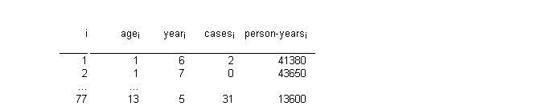
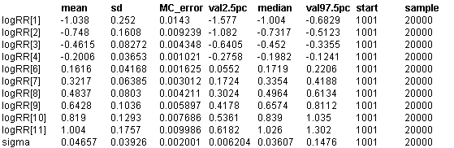

![[ice0]](ice0.bmp) Ice: non-parametric smoothing in
Ice: non-parametric smoothing in
an age-cohort model
Breslow and Clayton (1993) analyse breast cancer rates in Iceland by year of birth (K = 11 cohorts from 1840-1849 to 1940-1949) and by age (J =13 groups from 20-24 to 80-84 years). Due to the number of empty cells we consider a single indexing over I = 77 observed number of cases, giving data of the following form.

In order to pull in the extreme risks associated with small birth cohorts, Breslow and
Clayton first consider the exchangeable model
cases
i
~ Poisson(
m
i
)
log
m
i
= log person-years
i
+
a
age
i
+
b
year
i
b
k
~ Normal( 0,
t
)
Autoregressive smoothing of relative risks
They then consider the alternative approach of smoothing the rates for the cohorts by assuming an auto-regressive model on the
b
's, assuming the second differences are independent normal variates. This is equivalent to a model and prior distribution
cases
i
~ Poisson(
m
i
)
log
m
i
= log person-years
i
+
a
age
i
+
b
year
i
b
1
~ Normal( 0, 0.000001
t
)
b
2
|
b
1
~ Normal( 0, 0.000001
t
)
b
k
|
b
1,...,k-1
~ Normal( 2
b
k-1
- b
k-2
,
t
) k > 2
We note that
b
1
and
b
2
are given "non-informative" priors, but retain a
t
term in order to provide the appropriate likelihood for
t
.
For computational reasons Breslow and Clayton impose constraints on their random effects
b
k
in order that their mean and linear trend are zero, and counter these constraints by introducing a linear term b x year
i
and allowing unrestrained estimation of
a
j
. Since we allow free movement of the
b
's we dispense with the linear term, and impose a "corner" constraint
a
1
=0 .
model
{
for (i in 1:I) {
cases[i] ~ dpois(mu[i])
log(mu[i]) <- log(pyr[i]) + alpha[age[i]] + beta[year[i]]
#cumulative.cases[i] <- cumulative(cases[i], cases[i])
}
betamean[1] <- 2 * beta[2] - beta[3]
Nneighs[1] <- 1
betamean[2] <- (2 * beta[1] + 4 * beta[3] - beta[4]) / 5
Nneighs[2] <- 5
for (k in 3 : K - 2) {
betamean[k] <- (4 * beta[k - 1] + 4 * beta[k + 1]- beta[k - 2] - beta[k + 2]) / 6
Nneighs[k] <- 6
}
betamean[K - 1] <- (2 * beta[K] + 4 * beta[K - 2] - beta[K - 3]) / 5
Nneighs[K - 1] <- 5
betamean[K] <- 2 * beta[K - 1] - beta[K - 2]
Nneighs[K] <- 1
for (k in 1 : K) {
betaprec[k] <- Nneighs[k] * tau
}
for (k in 1 : K) {
beta[k] ~ dnorm(betamean[k], betaprec[k])
logRR[k] <- beta[k] - beta[5]
tau.like[k] <- Nneighs[k] * beta[k] * (beta[k] - betamean[k])
}
alpha[1] <- 0.0
for (j in 2 : Nage) {
alpha[j] ~ dnorm(0, 1.0E-6)
}
d <- 0.0001 + sum(tau.like[]) / 2
r <- 0.0001 + K / 2
tau ~ dgamma(r, d)
sigma <- 1 / sqrt(tau)
}
Data
( click to open )
Inits for chain 1
Inits for chain 2
( click to open )
Results
A 1000 update burn in followed by a further 100000 updates gave the parameter estimates
